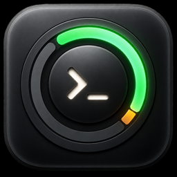
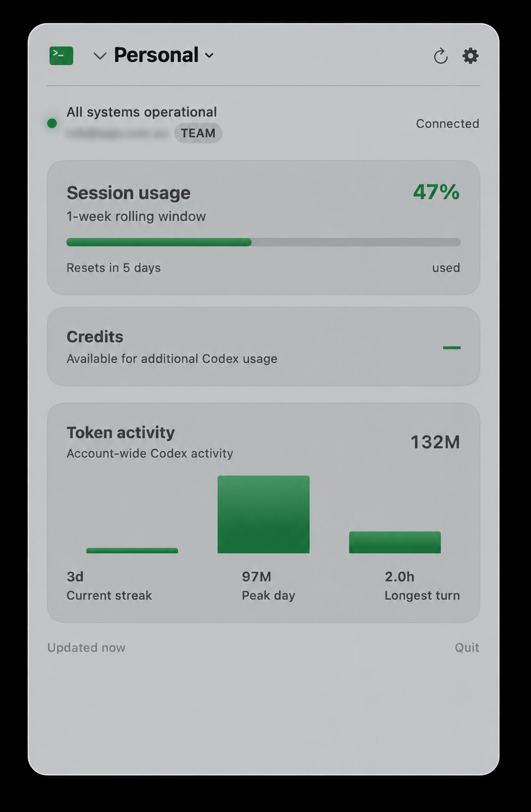
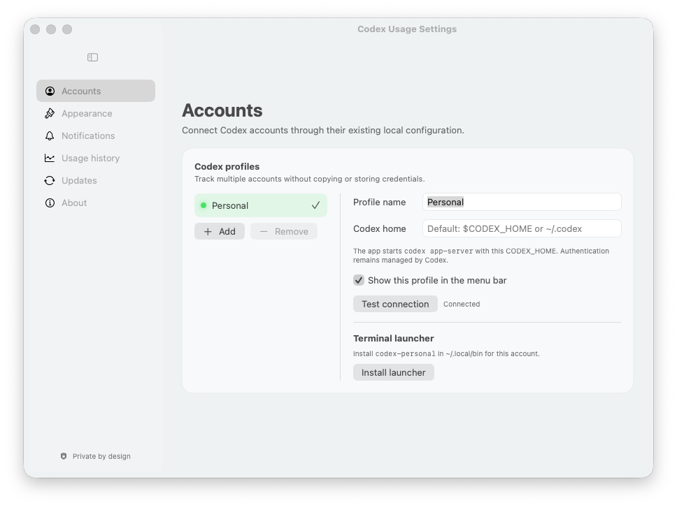

See what’s left.
View session and weekly rolling windows, used or remaining percentages, and reset times. Set warning and critical usage notifications.

Codex Usage TrackerOPEN SOURCE · MADE FOR MAC
Keep OpenAI Codex usage limits, reset times, and token activity in your Mac’s menu bar. Know what’s left before your next coding session.
Free · macOS 14+ · Signed & notarized

View session and weekly rolling windows, used or remaining percentages, and reset times. Set warning and critical usage notifications.
See up to 14 days of token activity when Codex provides it. Keep 90 days of local rate-limit history and export it as CSV.
Switch between Codex account profiles, each with its own Codex home directory. Create a terminal launcher for each profile.
GET STARTED
You’ll need macOS 14 Sonoma or newer, a recent Codex CLI, and a ChatGPT account signed in through Codex.
Install the app, open Codex Usage, then click its menu bar item. Add more profiles in Settings → Accounts.
LOCAL BY DESIGN
Codex Usage Tracker reads account and usage information through a local Codex subprocess. Codex handles authentication and account requests; the tracker never reads passwords, API keys, or authentication tokens.
Account details and usage history are cached on your Mac. The tracker’s only direct network request is to the public OpenAI service-status endpoint.
Read the privacy and security details
A FEW USEFUL ANSWERS
Install Codex Usage Tracker and sign in to the Codex CLI with your ChatGPT account. Open the app, then click its menu bar item to see your account’s usage windows, remaining or used percentages, and reset times.
It displays the rolling windows returned by Codex, including five-hour and weekly windows when your account provides them. Limits and window lengths come from Codex, rather than a fixed allowance in the tracker. Data availability depends on your account and Codex CLI version.
Yes. Add profiles in Settings → Accounts and point each one to a separate CODEX_HOME directory. Each directory uses its own Codex-managed sign-in.
No. It monitors the usage limits and token activity exposed by your Codex account. It is not an OpenAI API billing dashboard or a per-project cost calculator.
Codex Usage Tracker is free and open source under the MIT license. It requires macOS 14 Sonoma or newer; Windows and Linux are not supported. Your Codex account’s own access requirements and usage limits still apply.
No. This is independent software maintained by Agend Systems. It is not affiliated with or endorsed by OpenAI. The source code is available on GitHub.